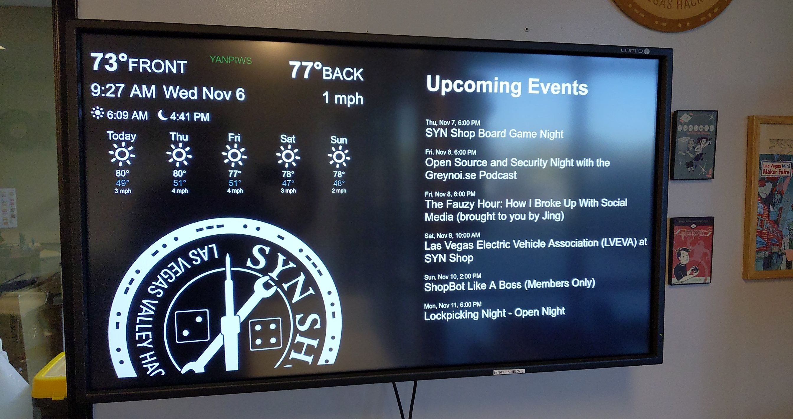
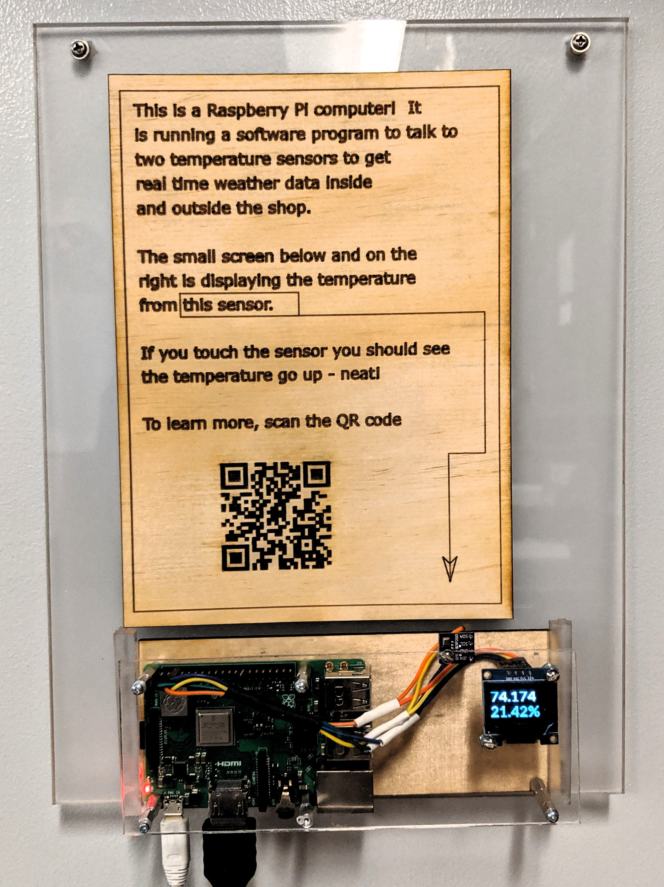

Front Kiosk Display
How to build this:


Bill of Materials
- Big ass wall mounted TV with HDMI input
- Raspberry Pi with WiFi, HDMI out and I2C pins
- BME280 I2C temp sensor
- 0.96" I2C OLED Display with SSD1306 driver
- Jumper Cables
Hardware build out
- Make a harness to connect the OLED display and the BME280 at the same time. Connect the OLED and sensor to the right pins on the Pi
- Connect the HDMI cable to the large monitor
- Fabricate a case for the Pi, OLED and sensor like shown above - but up to you how this looks ;)
- Fabricate a sign with the info and QR code
- Mount the Big ass TV and Sign, and Pi set up to a wall
{kind=link}
Software set up
- Install latest Rasbpian on and SD card. Insert it into the Pi. After
first boot, configure WiFi to be on the shop's LAN, run
sudo apt update;sudo apt dist-upgrade - Give the Pi a static IP by following these steps.
- Change the
piuser password to something random, add administrators SSH keys topiuser and harden SSH by editing/etc/ssh/sshd_confand changing it to not allow passwords viaPasswordAuthentication no. Restart ssh withsystemctl restart sshd - Install and configure YANPIWS per the sites instructions
- Enable the OLED to show the real time temps for the BME280 via these instructions
- Create
/var/www/html/dashboard/and put a copy ofMeetupEvents.phpin it from this repo - Grab a copy of the
index.phpandevents.phpfiles on this gist and put them in/var/www/html/dashboard/ - Create a folder called
member_fobbingin/var/www/html/and install the
fobber repo into it. Be sure to copyconfig.dist.phptoconfig.php. As well, ensure badger is doing a webhook call every time some one fobs in to the kiosk athttps://KIOSK_IP_HERE/member_fobbing. - Have the Pi use a full screen browser service pointing to
http://127.0.0.1/dashboard/per these steps. - enjoy!